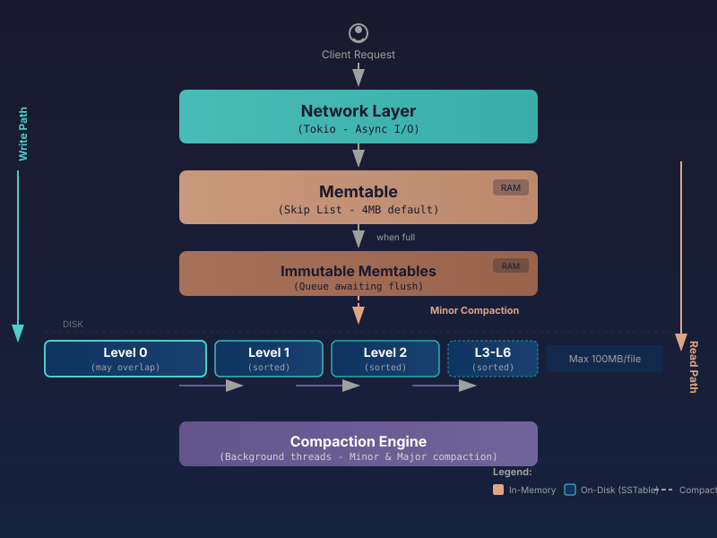

Memcached Protocol Compatibility
Full compatibility with the memcached text protocol. Connect using your existing memcached clients without any code changes. Supports GET, SET, DELETE, and other standard operations seamlessly.
Full compatibility with the memcached text protocol. Connect using your existing memcached clients without any code changes. Supports GET, SET, DELETE, and other standard operations seamlessly.
Built on SSTable-based storage for true data durability. Unlike traditional in-memory caches, MirDB persists your data to disk, ensuring it survives restarts and crashes.
Powered by Log-Structured Merge-tree architecture. Data flows from the in-memory memtable through multiple SSTable levels, optimizing for write-heavy workloads with efficient compaction.
High-throughput performance with Rust's zero-cost abstractions. Optimized read and write paths deliver consistent low-latency responses under heavy load conditions.
# Start MirDB server
cargo run --release
# Connect using any memcached client
telnet localhost 11211MirDB uses an LSM-tree (Log-Structured Merge-tree) architecture optimized for write-heavy workloads with efficient read performance.

Built on Tokio for high-performance async I/O. Implements the Memcached text protocol, enabling seamless integration with existing memcached clients across any programming language.
Active in-memory skip list data structure for fast writes. Default size of 4MB provides efficient write buffering. All incoming writes are first stored here before being flushed to disk for durability.
When the active memtable reaches capacity, it becomes immutable and is queued for flushing. A new empty memtable takes its place, allowing writes to continue uninterrupted during background compaction.
Sorted String Tables store data persistently on disk. Organized in 7 levels (L0-L6) with maximum file size of 100MB. Uses block-based structure with 4KB blocks, prefix compression, and Cuckoo filters for efficient lookups.
Manages data organization with two types: Minor compaction flushes immutable memtables to Level 0 SSTables. Major compaction merges SSTables between levels, maintaining sorted order and removing obsolete entries for optimal read performance.